Hemen daukazu jokuaren istoriaren azalpena:
Gure jokua 3 mapaz osatuta dago, eta bakoitzara joateko pausoak emango ditut.
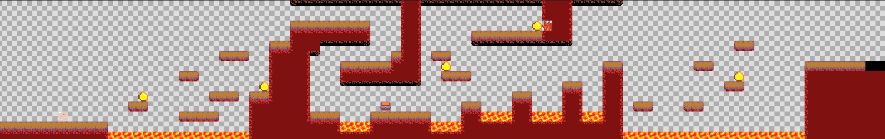
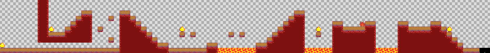
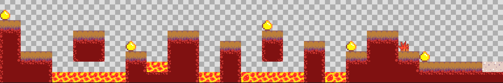
Etsaiakn hiltzeko "B" botoia sakatu behar duzu, hau da, "Intro", eta zure pertsonaia doan noranzkoan suzko bola bat aterako da.
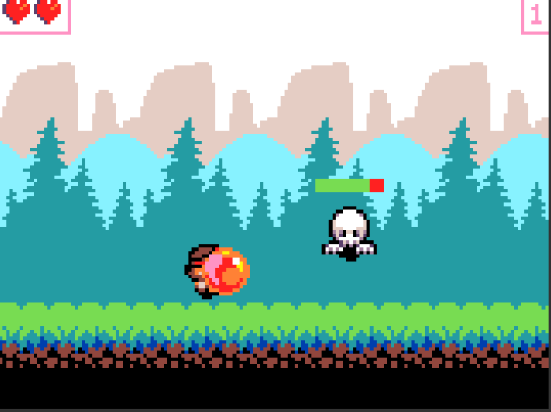
1. MAPA Puntuak edukitzeko urrezko esferak hartu beharko dituzu, eta mapa bakoitzeko 5 puntu lortzean, hurrengo mapara joango zara irabazi arte.
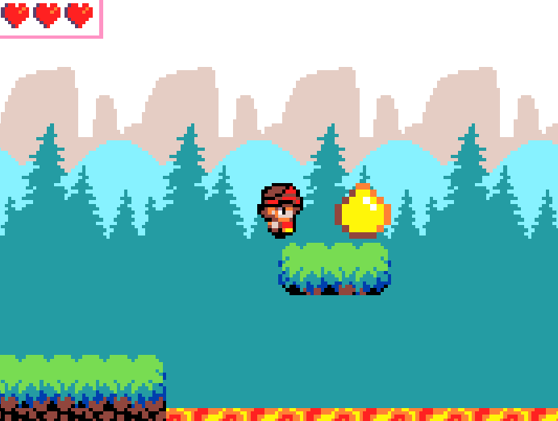
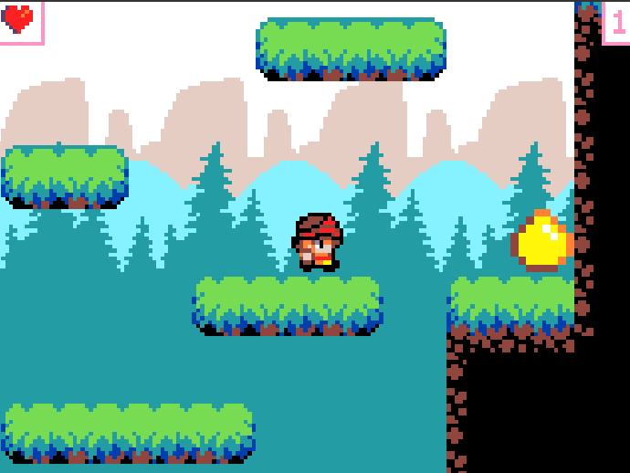
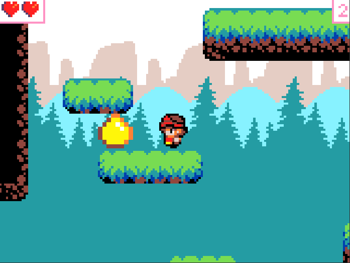
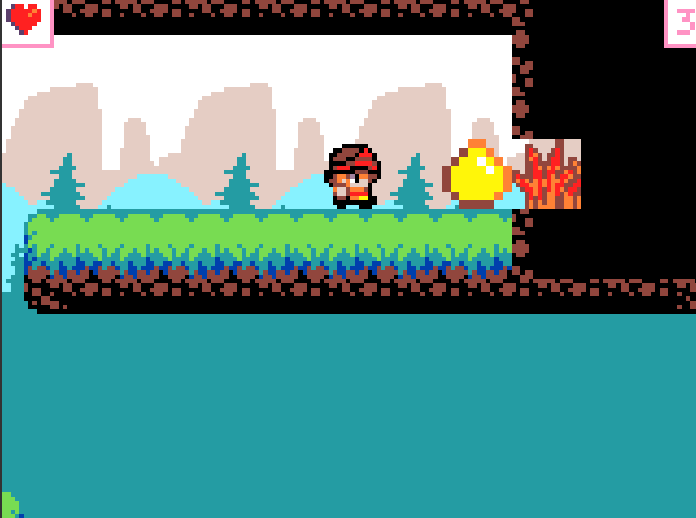
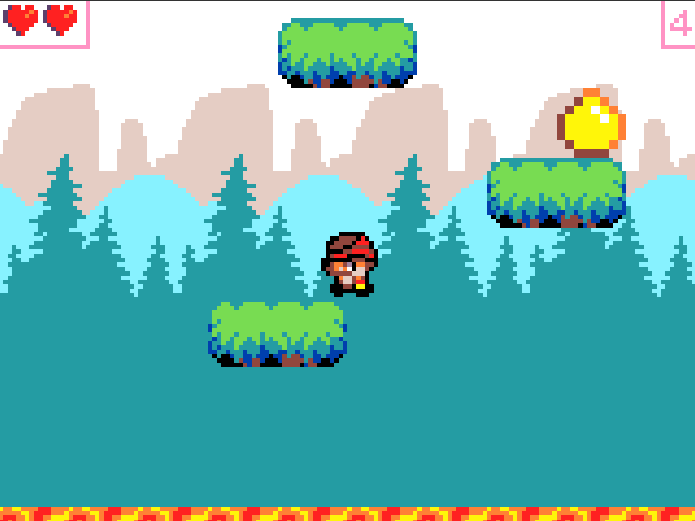
1. Mapan dagoen belarra bizitza bat emango dizu.
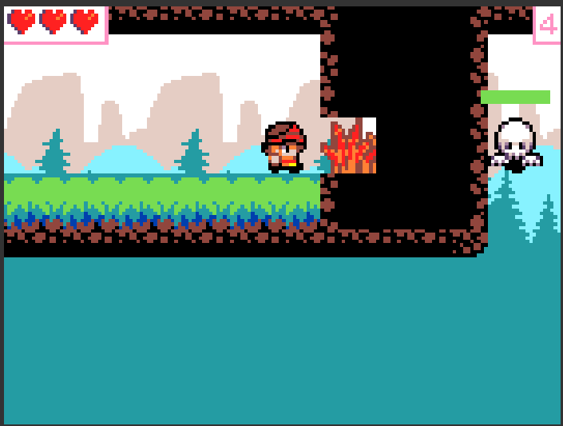
1. Mapan hiltzerakoan goterleku bat edukiko duzu bertan agertzeko.
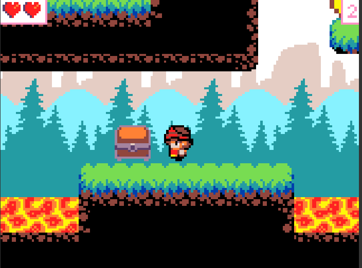
1. Maparen bukaeran 2. Mapara joateko plataforma ikutu behar duzu.
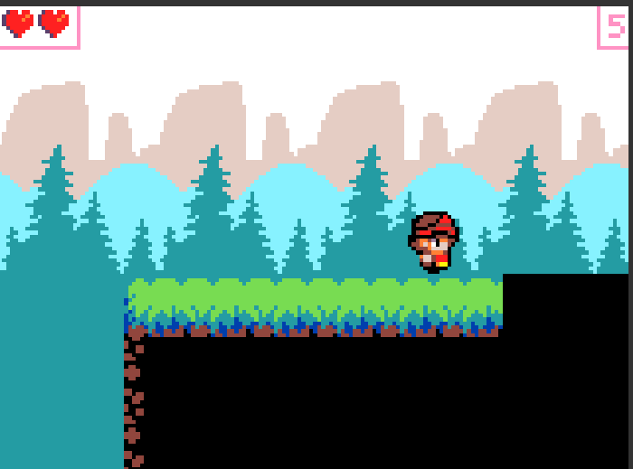
2. MAPA 2. mapan dauden 5 txanponak artzeko lekuak.
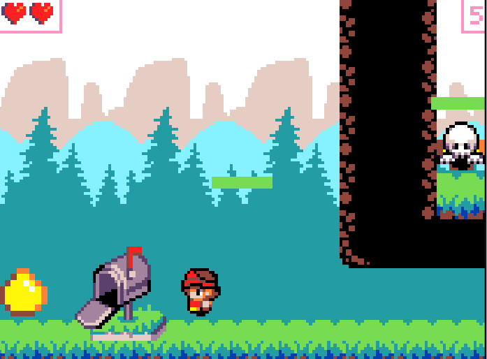
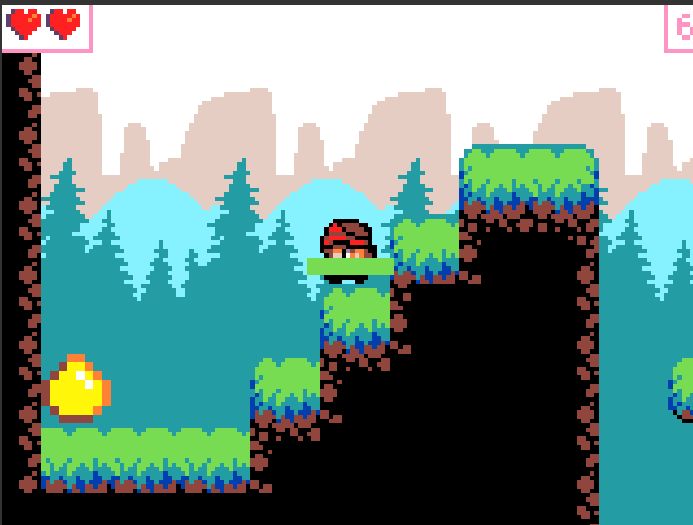
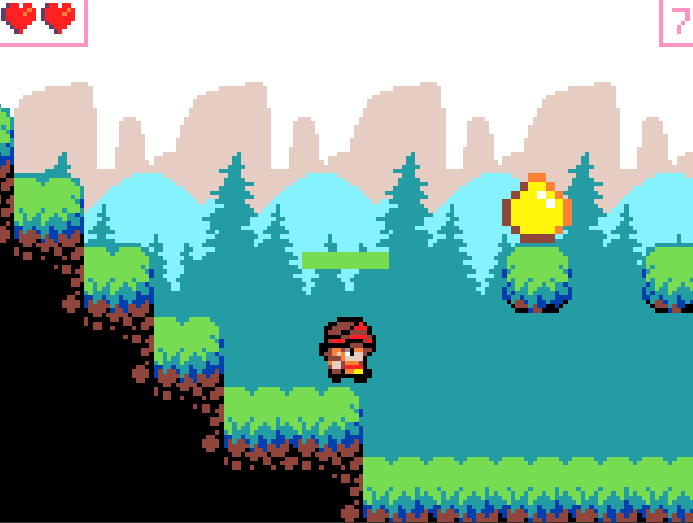
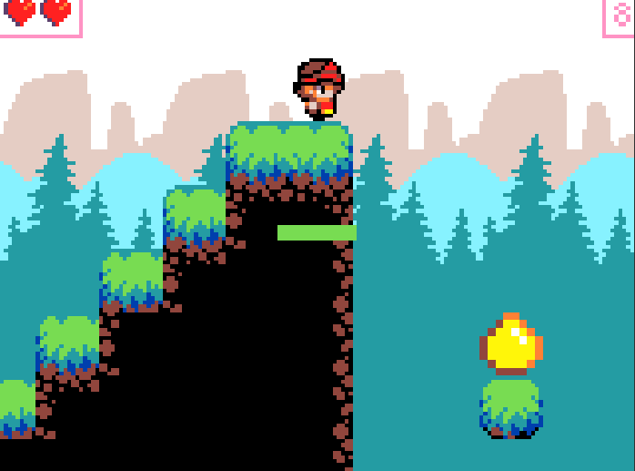
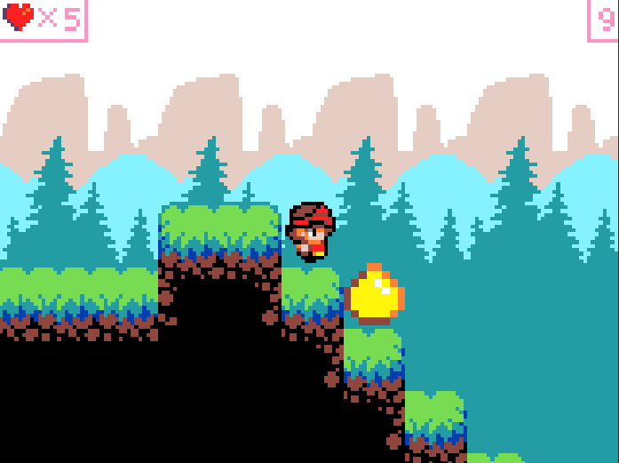
2. Mapan dagoen belarra bizitza bat emango dizu.
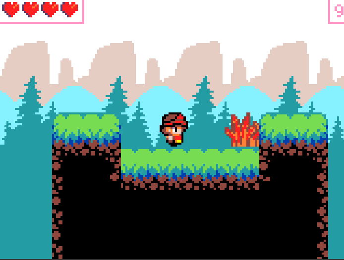
2. Mapan hiltzerakoan goterleku bat edukiko duzu bertan agertzeko.
2. Maparen bukaeran 3. Mapara joateko plataforma ikutu behar duzu.
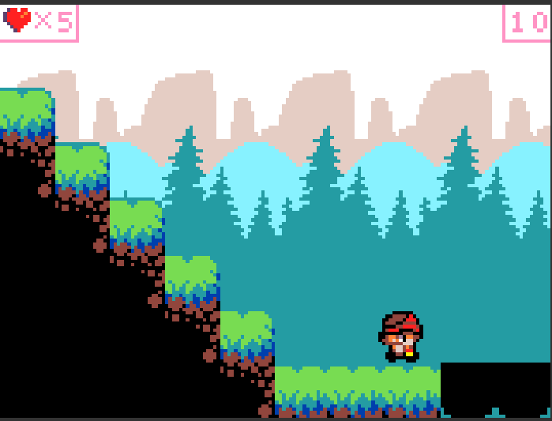
3. MAPA 3. mapan dauden 5 txanponak artzeko lekuak.
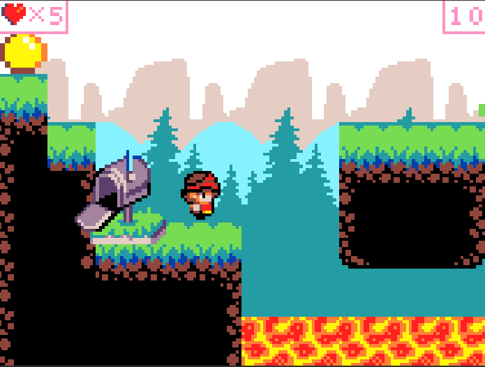
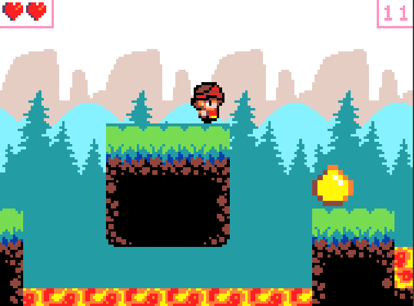
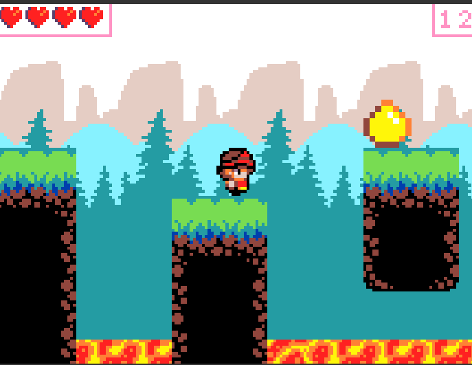
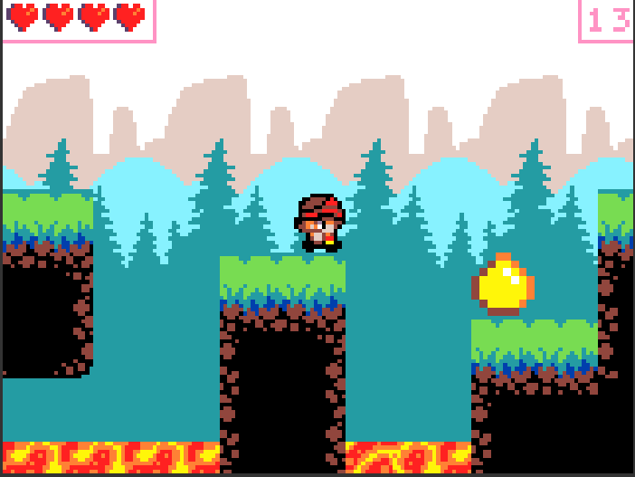
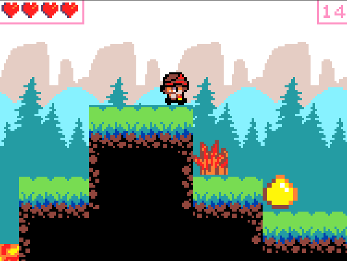
3. Mapan dagoen belarra bizitza bat emango dizu.
3. Mapan hiltzerakoan goterleku bat edukiko duzu bertan agertzeko.
3. Maparen bukaeran jokua bukatzeko plataforma ikutu behar duzu.
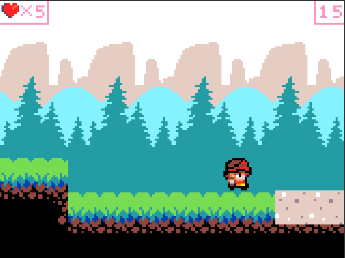
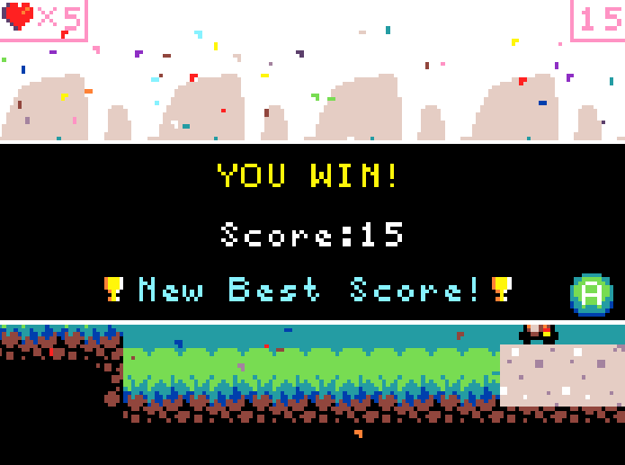
ITZULI NAGUSIRA